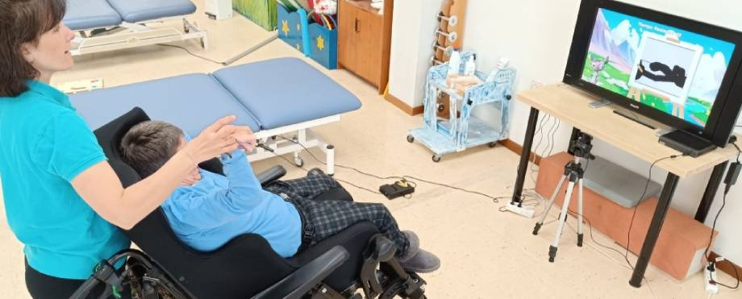

El proyecto FUNPER (FUNdación PERsonas) cuyo objetivo pasa por desarrollar un sistema de rehabilitación para pacientes con parálisis cerebral en extremidades superiores, basado en técnicas de visión artificial e inteligencia artificial. En este proyecto desempeñé el rol de Desarrollador.
Leer
